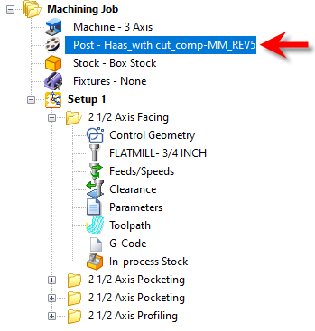
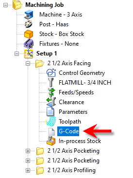
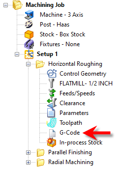
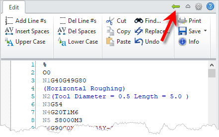
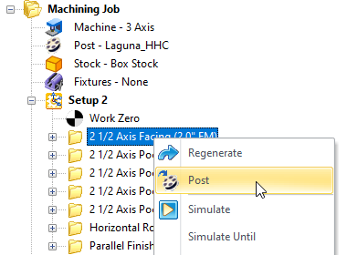
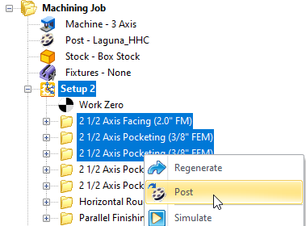
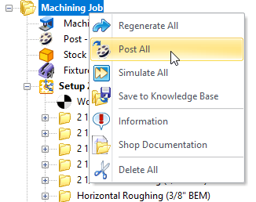
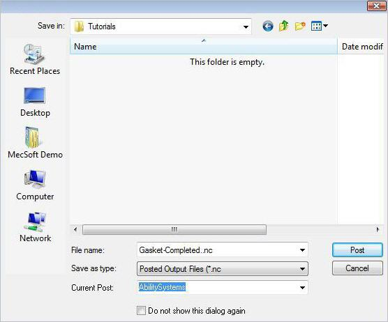
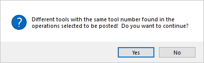

Once machining operations are created they can be post-processed to a specific machine controller. To post-process a machining operation, select the operation in the browser, right click and select Post. The product comes with a set of over 300 post-processors to choose from. The current post-processor and g-code is also stored with the Part file. The current post-processor and latest G-Code is stored with the part file for better CAM Life-cycle Management.
When you set the current post-processor for your Machining Job it is saved with your part file when the file is saved. This keeps the post-processor used to generate your g-code associated with your part file for better CAM Life-cycle Management.  The Current Post-Processor is stored with your Part File |
When you post-process a machining operation from the Machining Job, the G-Code data is also saved with your part file when the file is saved. This keeps all cam data together for better CAM Life-cycle Management. If you see that the G-Code icon is flagged, it means that the latest G-Code has not been captured. Regenerate the operation and the flag will be removed.  The G-Code Item within the MOp Folder |
You can view or edit your G-Code from an operation that you have generated by simply clicking on the G-Code icon within the mop folder.  G-Code Browser: Tool Crib menu item The Machining Browser will be replaced with the Edit tab of the G-Code Editor module. To return to the MILL module pick the left arrow icon at the top of the G-Code Editor browser. For documentation on using the G-Code Editor Edit tab click on the "?" help icon located at the top right side of the G-Code Editor browser.  G-Code Browser: Tool Crib menu item |
 Example of Posting a Machining Operation |
You have the ability to select multiple operations or the entire set of machining operations and post process all of them with a single button click. To do this you need to select a Setup in the browser, and right click and select Post. This will now post all the operations that are inside the selected Setup. You can also select multiple operations by holding down the Ctrl key. Example below shows posting multiple machining operations.  Selecting multiple operations by holding down the Ctrl key for posting |
Alternatively you can select Machining Job at the root level under the Machining Browser, right click and select Post All.  "Post All" from the Machining Job Folder |
Post-processing can be done from Program and Simulate tabs under the Machining Browser. Selecting Post will display the Post and Save As Dialog. The following are the default settings when the Post and Save As Dialog is displayed. •Post & Save As Dia points to the folder location where the part geometry is located. •Save as type – this refers to post file extension. This information is obtained from the Program tab > Set Post Options dialog. •Current Post - this refers to the controller/post processor to post process the toolpath. This information is also obtained from the Program tab > Set Post Options dialog. You can override the default settings under the Post & Save As Dialog. Once you click on the Post button in the dialog, post processing will begin and the posted file is located under the specified folder.  Dialog Box: Post & Save As |
Tool number conflicts are flagged before post-processing multiple operations. If multiple machining operations use different tools but with one or more coincident tool numbers, you are notified of this condition with the following message:  |